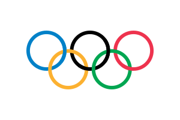
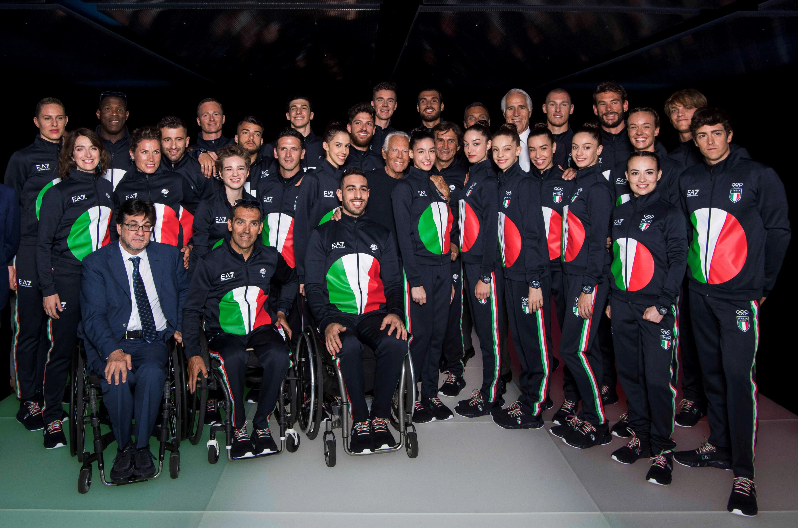

Olaszország az olimpián
Olaszország már az első 1986-os Athéni olimpián is ott volt
résztvevőként és azóta az összes Olimpián részt vett kivéve az 1904-es
Amerikai Olimpián. Az olaszok a nyári és a téli Olimpián is résztvettek.
Rengetek szereplésüknek köszönhetően az érmetszerző országok közül az örökranglista
6. helyén állnak a maguk 759 érmükkel. Ehhez a 6. helyhez: 259 arany, 231 ezüst és 269 bronz érem volt szükséges.
Viszont a sok érem mellé sok indális is társul mégpedig nem is kevés az olaszok esetében ami az egyik legtöbb a maguk
28 alkalmával. Ezalatt a 28 indulás alatt a legsikeresebb évük a nyári olimpiák közül a hazai 1960-as római és az amerikai
1932-es Olimpia volt 36-36 éremmel. Azonban nem csak a nyárin hanem a tlin is sikerekben gazadag éveik volt és ezek közül is
a legjobb az 1994-es Norvég Olimpia volt 20 éremmel. Sportokat tekintve A nyárin a Vívásban voltak kiemelkedőek
míg a télin az összes érmet nézve a sífutásban azonban az arany éremet nézve az aplesisíban volt kimagasló
teljesítményük.

Olaszország eredményei
|  | Olimpiák száma | Arany | Ezüst | Bronz | Összesen |
|---|---|---|---|---|---|
| Téli | 24 | 42 | 43 | 56 | 141 |
| Nyári | 28 | 217 | 188 | 213 | 618 |
| Összesen | 52 | 259 | 231 | 269 | 759 |

Az olasz csapat a 2020-as tokiói Olimpián
Különböző sportok és az abban elért eredményeik
| Sportág | Arany | Ezüst | Bronz | Összesen |
|---|---|---|---|---|
| Vívás | 48 | 40 | 33 | 121 |
| Atlétika | 19 | 15 | 26 | 60 |
| Kerékpározás | 32 | 16 | 9 | 57 |
| Övölvívás | 15 | 15 | 17 | 47 |
| Evezés | 10 | 14 | 12 | 36 |
- Vívás
- Kerékpározás
- Atlétika
- Atlétika
- Ökölvívás
- Torna
- Evezés
- Sportlövészet
- Lovaglás
- Birkózás
- Kajak-kenu
- Súlyemelés
- Vízilabda
- Úszás
- Műugrás
- Vitorlázás
- Cselgáncs
- Öttusa
- Íjászat
- Labdarúgás
- Röplabda
- Kosárlabda
- Taekwondo
- Tenisz